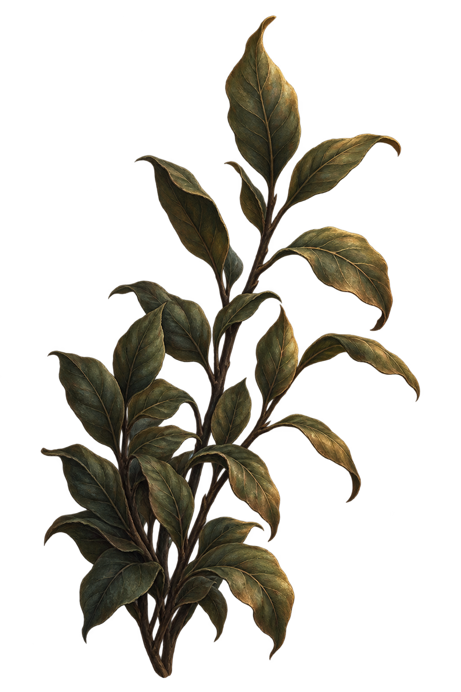

<!doctype html><meta charset="utf-8"><title>Home R9 foliage alpha diagnostics</title><style>html,body{margin:0;background:#17202b;color:#f3e4c8;font:14px Arial,sans-serif;width:1008px}header{height:84px;box-sizing:border-box;padding:12px 18px;line-height:20px}h1{font-size:20px;line-height:24px;margin:0}h2{height:34px;line-height:17px;font-weight:normal;font-size:13px;margin:0;padding:3px 12px;box-sizing:border-box}.row{display:flex}.tile{display:flex;align-items:center;justify-content:center;width:336px;position:relative}.tile span{position:absolute;left:8px;top:5px;font:11px Arial;background:#777;color:white;padding:2px 4px}img{display:block;object-fit:fill}section{margin:0;padding:0}body.panels section[data-group=small],body.small section[data-group=panels]{display:none}</style><header><h1>Home R9 — new isolated foliage</h1>Black · White · Saturated magenta. New generated RGBA foliage; original file displayed without pixel edits.<br>Offline browser QA only, not a page implementation or Unity capture. Sources are displayed unchanged.</header><section data-group="panels" data-name="foliage_generated_01.png"><h2>foliage_generated_01.png — Complete generated foliage; 2x intended placement inspection</h2><div class="row"><div class="tile" style="background:#000;height:506px"><span>BLACK</span></div><div class="tile" style="background:#fff;height:506px"><span>WHITE</span></div><div class="tile" style="background:#ff00d9;height:506px"><span>SATURATED MAGENTA</span></div></div></section><script>const group=new URLSearchParams(location.search).get('group');if(group)document.body.className=group;window.previewReady=Promise.all([...document.images].map(i=>i.decode()));</script>